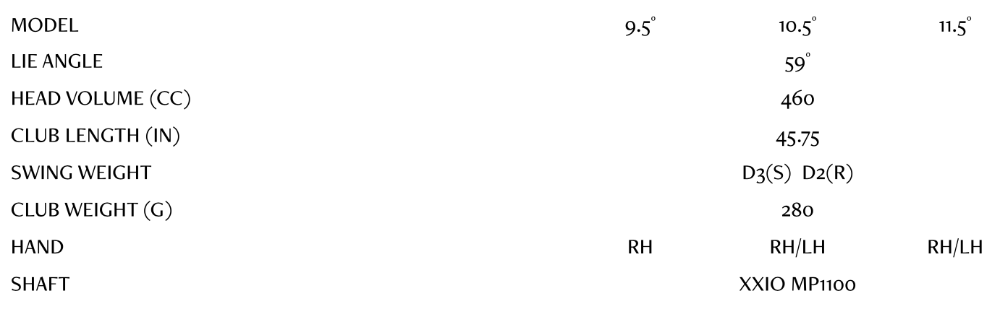

XXIO ELEVEN DRIVER
Experience the difference with the XXIO Eleven Driver. Featuring breakthrough technologies that benefit the moderate swing speed golfer, the XXIO Eleven Driver delivers a Star Frame rib structure and powerful cup face for easy distance off the tee.
TECHNOLOGY

Star Frame
XXIO Eleven’s Driver uses a Star Frame rib structure to support a sole thickness of just .45mm, redistributing weight for improved launch and forgiveness.
Cup Face
The XXIO Eleven Driver features a powerful yet normalized cup face that is fastest on center strikes and miss-hits alike.
Weight Plus
Brass and rubber weights in the butt-end of each club raise balance points to unprecedented heights. The effect is a smooth and easy swing that also helps you consistently find the ideal top-of-swing position for more power.
XXIO ELEVEN DRIVER Specs
XXIO ELEVEN DRIVER PRICE
€ / CHF / SEK / £